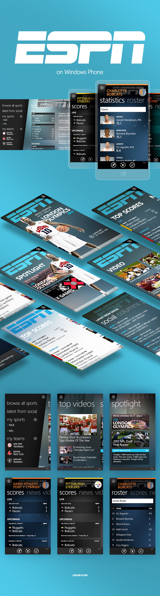
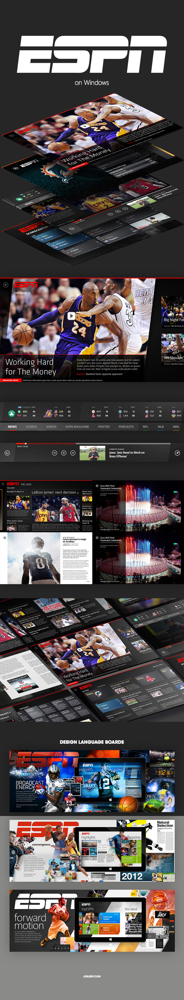

ESPN on windows. Sports goes metro.
A new ESPN visual language, native to Windows.
The worldwide leader in sports tasked POP with developing a library of apps, which blended the visual language of ESPN with what was once called "Metro" - Microsoft's new digital design paradigm.
We set to work creating "Hub" – a Nokia hardware exclusive that brought truly comprehensive sports coverage to any region of the world — and a first for ESPN.
Compared to the brash attitude of SportsCenter, ESPN Hub was designed with a more subtle touch for a world that was not attuned to "da na na". Its colors are softer and more muted then the SportsCenter set. More important, if you're a proper football fan from UK, traveling in India and checking the cricket scores back home, you could jump around in just a few quick swipes. Tne UX was optimized for world sports. All of em.
On the backs of our work with ESPN Hub, we were tasked with an all new platform: Surface. A massive endeaveor, we productized the entire ESPN.com content and feature set into a beautiful, native app which we codenamed... "Ocho". (It made sense at the time... the Metro language first came to Windows 8.)
Back to menu